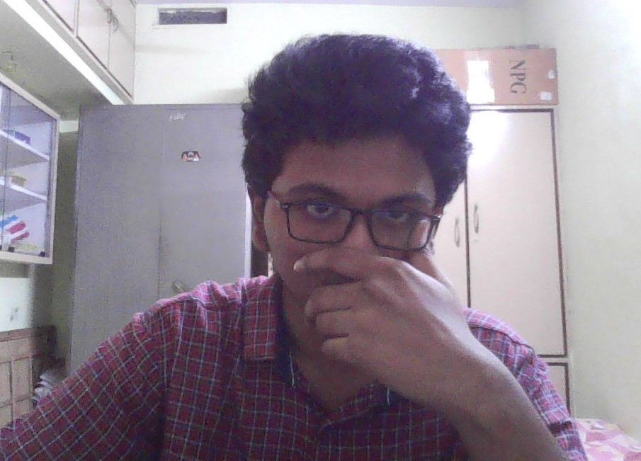

My Resume
Vamsi Krishna
B.Tech Graduate | Mechanical Engineering | IIT Jodhpur

Summary
I'm an expertise in machine learning, Python, and web development, seeking
a challenging role in a forward-thinking organization where I can apply my skills and
drive innovation in the field of data analytics.
Educational Background
-
B.tech
- Mechanical Engineering, IIT Jodhpur (2019 - 2023)
- CGPA: 7.6/10
-
Intermediate
- MPC Course, Bhashyam Junior College (2017 - 2019)
- CGPA: 10/10
-
High School
- Bhashyam High School (2017)
- CGPA: 10/10
Skills
-
Programming
-
Web development
- HTML, CSS, Bootstrap
- Javascript
- Frameworks: React, Angular
-
ML and DA Tools
- Tablaeu
- Excel
- Pandas, sklearn
Social Links
Projects
-
Gravitational Wave Detection
| Dr. Angshuman Paul
- Developing a deep-learning model that helps to differentiate gravitational waves
from detector noise.
- The model is trained with time sequential data, and CNN model was used for
training and testing purposes.
- Used Deep Learning tools like Tensor flow and Pytorch
-
Weather Prediction using Machine Learning
| Self Project
- Preprocessed data-set using Data cleaning and analysing missing data.
- Developed different machine learning Algorithms for prediction and compared
performances of different Machine Learning Algorithms.
- Used sklearn and pandas libraries
- Developed a Web page using HTML, CSS and ReactJS to show the daily predictions
-
Appearance Based Recognition of Finger Spelling Alphabets
| Dr. Yashaswi Verma
- Developed a ML model for automatic sign language detection helps people with
hearing and voice disability people to communicate with the others.
- PCA Model with different image processing filters are used and compared
- Used Deep Learning tools like Sklearn and Pandas.
-
Daily Expenses Tracker
| Self Project
- Keeps track of income and expenses that helps us to save money and manage
finances.
- Details of expenses,income are recorded in daily basis in the form of pie charts.
- • Used basic concepts of HTML, CSS, JavaScript.
Achievements
- Secured 1st position worth cash prize 10,000/- in ROBO-SOCCER, a inter-college
competition conducted during Technical Fest Prometeo’20 | IIT Jodhpur| 2020
- Won 2nd prize worth 6000/- in Summer Challenge 2020 conducted in IIT Jodhpur
forthe article written on Ideas to improve COVID-19 Testing Technology during
initial stages of pandemic | 2020 June
- Among top 0.5 percent students in Joint Entrance Exam | 2019
Extra - Curricular
- Algebra and Mathematics expert in CheggIndia| April 2021 - present
- Automobile club core member| Sept 2019 - Mar 2020
- Member of Public relations Team for Technical fest Prometeo | IIT Jodhpur|2020
- Member of Designing Team for Cultural Fest IGNUS’20 | IIT Jodhpur| 2020